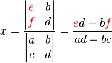
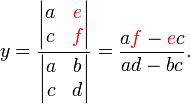

| Choisissez votre langue ! | Choose your language ! |
Portrait de Gabriel Cramer (Suisse-1704-1752)
Portrait of Gabriel Cramer (Switzerland-1704-1752)
Définition
Definition
définition 1
Un
'système de Cramer'
est un système de n équations linéaires à n inconnues de rang n.
definition 1
A
'Cramer's system'
is a system of n linear equations with n unknowns of rank n.
Il résulte de la définition qu'un tel système s'écrit sous forme matricielle AX=B où A est une matrice carrée d'ordre n et de rang n, donc .
De là nous pouvons conclure:
De là nous pouvons conclure:
It follows from the definition that such a system is written in matrix form AX=B where A is a square matrix of order n and rank n, so .
From this we can conclude:
From this we can conclude:
théorème 1
Tout système de Cramer possède une solution unique donnée par X=A-1B.
theorem 1
Every Cramer system has a unique solution given by X=A-1B. <
Formules de Cramer
La forme de la solution donnée plus haut suppose qu'on aie déjà calculé l'inverse de la matrice du système. Or il advient que le calcul de l'inverse est un problème à n2 inconnues (les coefficients de A). Donc pour avoir l'expression de la solution en fonction de la matrice inverse il faut déjà calculer cette matrice inverse, ce qui est un problème plus difficile que le problème initial. Cependant le préambule a un interêt, il montre clairement l'existence et l'unicité de la solution dans les conditions de l'énoncé.Cela dit nous avons des formules explicites pour la solution exprimées au moyen de , que nous allons donner maintenant. Ces formules sont tout à fait applicables dans le cas de systèmes d'ordre petit, elles deviennent pratiquement inutilisables pour le systèmes d'ordre élevé, c'est pourquoi nous verrons de nombreuses autres méthodes de résolution. Nous énonçons maintenant la règle de Cramer:
Cramer's formulas
The form of the solution given above assumes that we have already calculated the inverse of the system matrix. But it happens that the calculation of the inverse is a problem with n2 unknowns (the coefficients of A). So to have the expression of the solution according to the inverse matrix it is already necessary to calculate this inverse matrix, which is a more difficult problem than the initial problem. However the preamble has an interest, it clearly shows the existence and uniqueness of the solution under the conditions of the statement.That being said we have explicit formulas for the solution expressed by means of , which we are going to give now. These formulas are quite applicable in the case of small order systems, they become practically unusable for high-order systems, it is why we will see many other methods of resolution. We now state Cramer's rule:
théorème 2
Soit AX=B un système de Cramer. X=(x1,...,xn) étant le vecteur inconnu. Les xi sont donnés par:
\( x_{i}=\frac{Dét \left ( A_{i} \right )}{Dét\left ( A \right )} \text{ pour }1\leqslant i\leqslant n \)
où Ai est la matrice obtenue en substituant le vecteur colonne B à la i-ième colonne de A.theorem 2
Let AX=B be a Cramer system. X=(x1,...,xn) being the unknown vector. The xi are given by:
\( x_{i}=\frac{Dét \left ( A_{i} \right )}{Dét\left ( A \right )} \text{ for }1\leqslant i\leqslant n \)
where Ai is the matrix obtained by substituting the column vector B for the i-th column of A. La démonstration repose sur le calcul de l'inverse au moyen de la comatrice (transposée de la matrice des cofacteurs - ( voir ), et sur la formule X=A-1B
Voyons tout de suite ce que donnent ces formules à l'ordre 2, pour le système:
ax+by=e
cx+dy=f
Les solutions sont:
Voyons tout de suite ce que donnent ces formules à l'ordre 2, pour le système:
ax+by=e
cx+dy=f
Les solutions sont:
The demonstration is based on the calculation of the inverse by means of the comatrix (transposed from the matrix of cofactors - ( see ), and on the formula X=A-1B
Let us see immediately what these formulas give to order 2, for the system:
ax+by=e
cx+dy=f
The solutions are:
Let us see immediately what these formulas give to order 2, for the system:
ax+by=e
cx+dy=f
The solutions are:


- Voici maintenant une appliquette qui vous permet de générer des systèmes de Cramer.
- Vous pouvez choisir le corps de base parmi 4 possibilités.
- Choisissez l'ordre de la matrice de 2 à 4 avec le curseur (limitation à 3 pour les rationnels).
- Un système est généré avec matrice A et second membre B.
- Vous pouvez chercher à le résoudre sur papier.
- Cliquez sur le bouton 'Solution' pour voir la solution.
- Here is now an applet that allows you to generate Cramer systems.
- You can choose the base field from 4 possibilities.
- Choose the order of the matrix from 2 to 4 with the cursor (limited to 3 for rationals).
- A system is generated with matrix A and second member B.
- You can try to solve it on paper.
- Click on the 'Solution' button to see the solution.
|
Matrice du système
Sstem matrix
|
Second membre
member
|
Résultat
Result
|
|||||
| ℝ | |
| ℚ | |
| ℤ/5ℤ | |
| ℂ |
Ordre de la matrice carrée A :
Order of matrix A
|
Création Gilles Dubois
Created by Gilles Dubois
|
Janvier 2022
January 2022
|
Version mobile Jquery
Mobile Jquery version
|
|